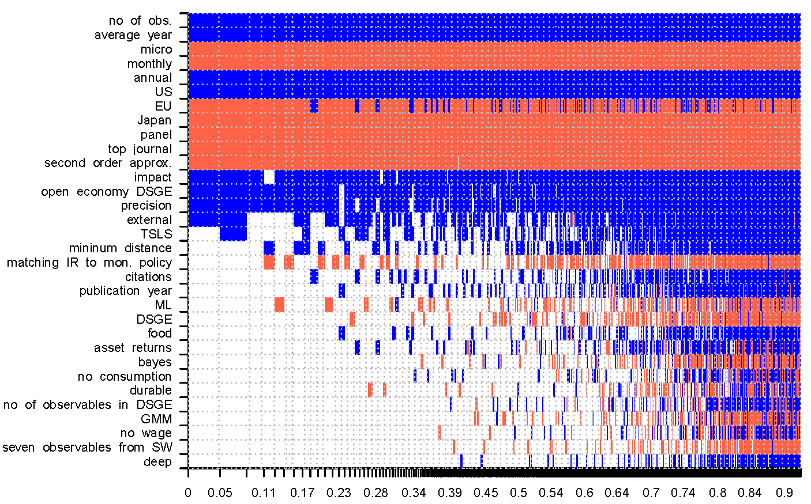

Abstract
We examine 597 estimates of habit formation reported in 81 published studies. The mean reported strength of habit formation equals 0.4, but the estimates vary widely both within and across studies. We use Bayesian and frequentist model averaging to assign a pattern to this variance while taking into account model uncertainty. Studies employing macro data report consistently larger estimates than micro studies: 0.6 vs. 0.1 on average. The difference remains 0.5 when we control for 30 factors that reflect the context in which researchers obtain their estimates, such as data frequency, geographical coverage, variable definition, estimation approach, and publication characteristics. We also find that evidence for habits strengthens when researchers use lower data frequencies, employ log-linear approximation of the Euler equation, and utilize open-economy DSGE models. Moreover, estimates of habits differ systematically across countries.
Fig: Difference in data characteristics are the most important factors behind the heterogeneity in the reported estimates of habit formation.
Reference: Tomas Havranek, Marek Rusnak, and Anna Sokolova (2017), "Habit Formation in Consumption: A Meta-Analysis." European Economic Review 95, 142-167.